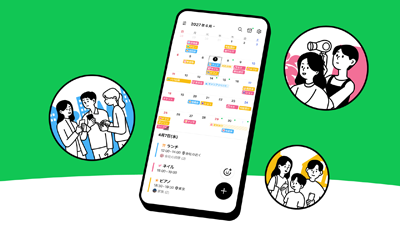
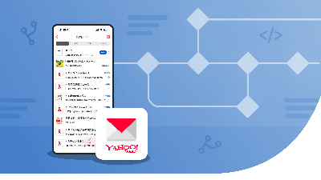
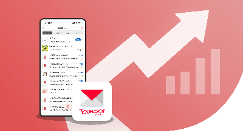
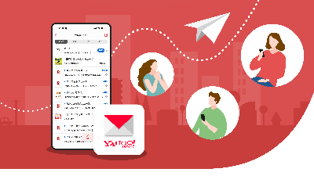
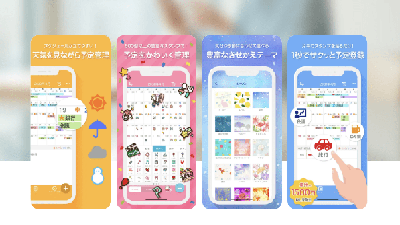

'">2026~ LINEカレンダーアプリ
コミュニケーションデザインの立ち上げ、推進
2007年よりモバイル・Web・アプリのプロダクトデザイン（UI/UX）やコミュニケーションデザイン（BX）を担当。Yahoo!メール等の大規模サービスにおける機能改善・グロースから、LINE/Yahoo!カレンダー等の新規0-1立ち上げなど幅広く手掛けてまいりました。要件定義から情報設計、デザインシステム構築、ストア・LP等、一貫して引き受けられる点が強みです。
自分自身で手を動かし、「作る・描く・形にする」を何よりも大切にしています。

'">コミュニケーションデザインの立ち上げ、推進

'">機能拡張、OS要件対応、基盤改善

'">グロース＆リテンション施策

'">コミュニケーションデザイン、ブランド体験の向上の取り組み

'">新規立ち上げ〜ブランド統合、機能拡張
スマホ・モバイル黎明期における多数の新規アプリ立ち上げにUI/UX(プロダクトデザイン)で参画の実績があります。